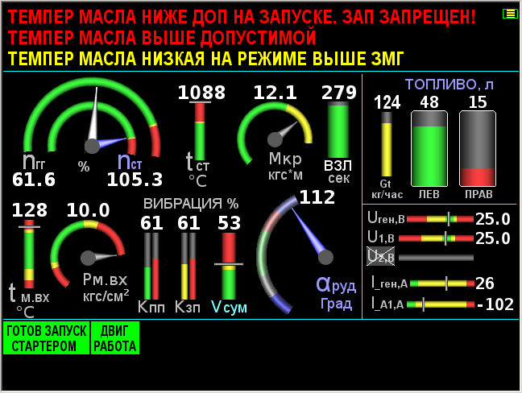
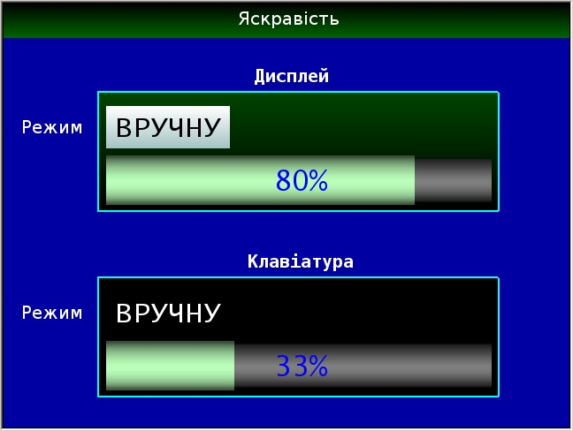
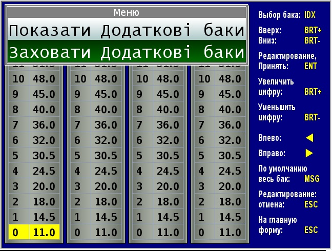
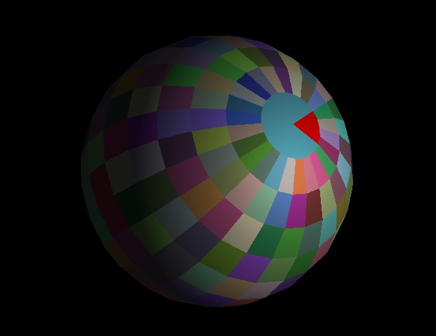
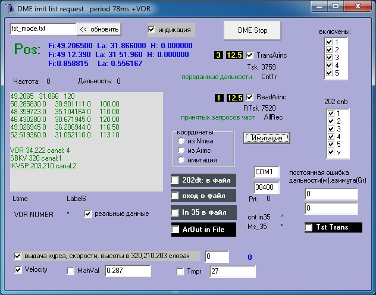

1. Age - 56 years
2. Education
Cherkasy Pedagogical Institute 1980-1985.
Specialty: Physics and Mathematics (teacher).
3. Where I worked
Teaching physics in a rural school: 1984-2002.
Design Engineer, firm Orizon-Navigation 2002-2019.
(This is officially, actually a software engineer
( ...wiki/Оризон-Навігація.)
4. What did I do?
Mathematical solution and programming of navigation problems: reference calculation orthodromy, loxodromy and other.
Development and maintenance of 2D vector cartographic system for devices firms. This is an alteration and acceleration of the pixel variant and the transition to OpenGL. Writing graphic primitives , line smoothing algorithms and a lot of things there in this chart.
Mathematical development and software implementation of the complete DME system for the avia devices. This is navigation through radio rangefinder, including communications according to the Arink, Binr and others protocols.
The implementation of the algorithms of the Gbas precision landing system for aircraft according to ICAO documents. This includes mathematical development and implementation 6 byte Solomon code full mathematical and software development (according to ICAO documents), writing simulatorsfor messages Gbas reference stations, testers and more.
Research and use of the Kalman filter.
Development of an indication of the parameters of the aircraft engine.
The implementation of accurate astronomical orientation, that is, the exact position Sun and stars at any time.
There were once drivers, assemblers, touchscreens, ports and much more. Programs for converting files of cartographic formats. I.e,writing converters.
5. Personal qualities
Honest and responsible - that's for sure. In the team, I think, respected.
6. Experience of use:
C++, MsVC, Builder, Windows, WinApi, Shaders, OpenGL, Embedded systems.Java, HTML, css, JavaScript, JSON, Linux, Blender, Unity, STL, GMS2, SDL.
7. Ability to learn new languages, skills and instruments, if necessary.
8. I like
image processing, for myself I made a shader of the Fong-Blinn lighting model for a 3d sphere model, a gradient filter and selecting lines along the gradient…
I made simple game with custom algorithm A-star.
Applied A-Star to solve 8-pazzles game.
9. English, probably a little higher than beginer. Technical level.
10. Some works:
indication of the parameters of the aircraft engine
indication of the parameters of the aircraft engine
indication of the parameters of the aircraft engine
Fong-Blinn lighting model for a 3d sphere (MSVS Win32)
avia DME simulator, tester
simple my html-javascript game: (made merely for myself)
Попытка сделать минималистический дизайн двух страниц сайта на конкурс (рабочие 2 первые кнопки меню)